Kriptografi, Otentikasi & PKI, TLS 1.3, IPsec VPN, WPA3, Mitigasi DoS, & Firewall/IDS
Referensi Utama: Kurose & Ross — Computer Networking: A Top-Down Approach (8th Ed., Ch. 8)
Dosen Pengampu:
1. Fondasi Keamanan & Model Ancaman
2. Kriptografi Simetris & Kunci Publik (RSA)
3. Otentikasi, Hash, Signature & PKI
ap1.0–ap4.0 (Nonce), Playback Attack & MITM4. Keamanan Multi-Layer (TLS 1.3, IPsec, WPA3)
5. Pertahanan Perimeter, DoS & Simulasi
Peta Besar Keamanan Jaringan, 4 Pilar CIA+A, Entitas Alice–Bob–Trudy, dan Spektrum Ancaman
Hanya pengirim dan penerima sah yang dapat memahami isi pesan yang ditransmisikan melalui enkripsi.
Mekanisme: Algoritma simetris (AES-256) & kunci publik (RSA/ECDHE) mengubah plaintext menjadi ciphertext.
Menjamin pesan tidak dimodifikasi, dipotong, atau disisipi di tengah jalan tanpa terdeteksi oleh penerima.
Mekanisme: Fungsi hash satu arah (SHA-256), HMAC, & Digital Signature (seperti segel anti-buka paket).
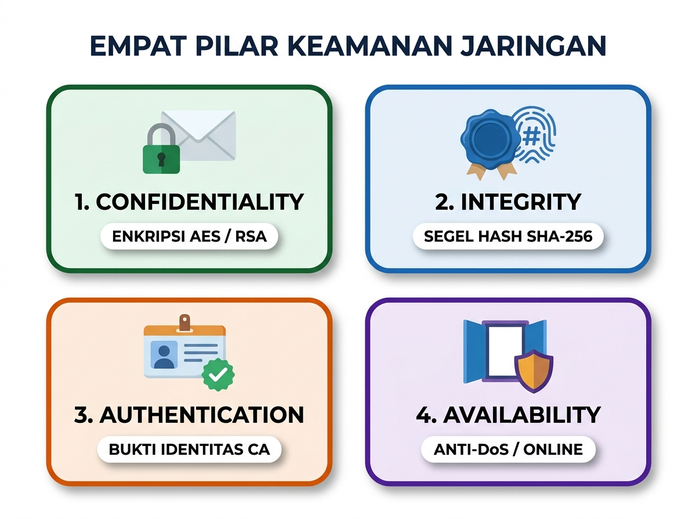
Pilar 1 & 2 menjaga kerahasiaan isi data sekaligus mendeteksi modifikasi di saluran publik.
Pengirim & penerima harus mampu membuktikan identitas masing-masing secara kriptografis sebelum bertukar data.
Mekanisme: Protokol Challenge-Response (Nonce), sertifikat X.509 dari CA, & MFA/802.1X.
Layanan jaringan wajib tetap dapat diakses pengguna sah setiap saat tanpa dilumpuhkan oleh banjir trafik ilegal.
Mekanisme: Stateful Firewall, IPS, SYN Cookies, & proteksi banjir paket DoS / DDoS.
Pilar 3 & 4 memverifikasi identitas pihak tepercaya serta menjaga layanan tetap aktif dari DoS.
Model Entitas Komunikasi:
4 Kapabilitas Serangan Trudy:
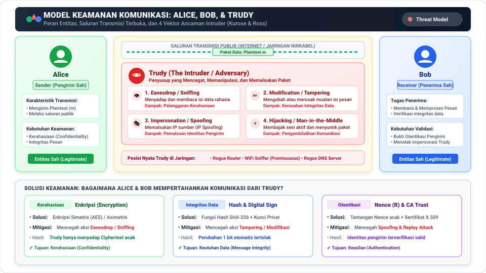
Model Ancaman Saluran Komunikasi Terbuka (Alice, Bob, & Trudy)
Model Simetris AES, Kriptanalisis, Revolusi Asimetris, Konstruksi RSA, dan Enkripsi Hibrid
1. Simetris (Shared Secret Key $K_S$):
2. Asimetris (Public $K^+$ & Private $K^-$):
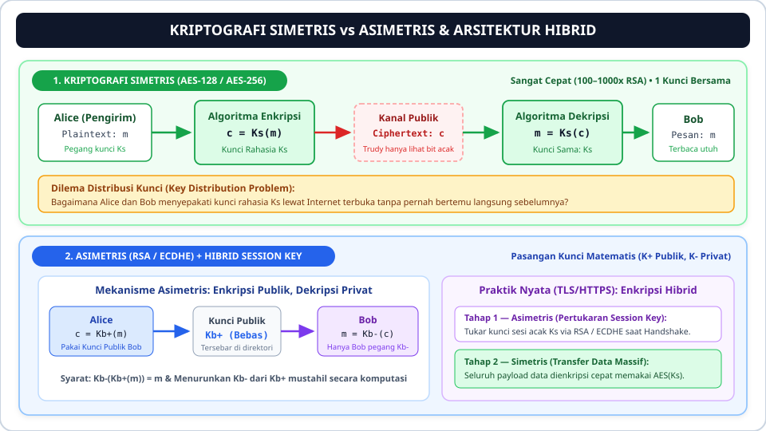
Mekanisme Kriptografi Simetris, Kunci Publik, dan Pertukaran Session Key Hibrid
a→m, b→q). Total pemetaannya mencapai $26! \approx 2^{88}$.E selalu muncul $\sim 12{,}7\%$) sehingga mudah ditebak lewat statistik teks.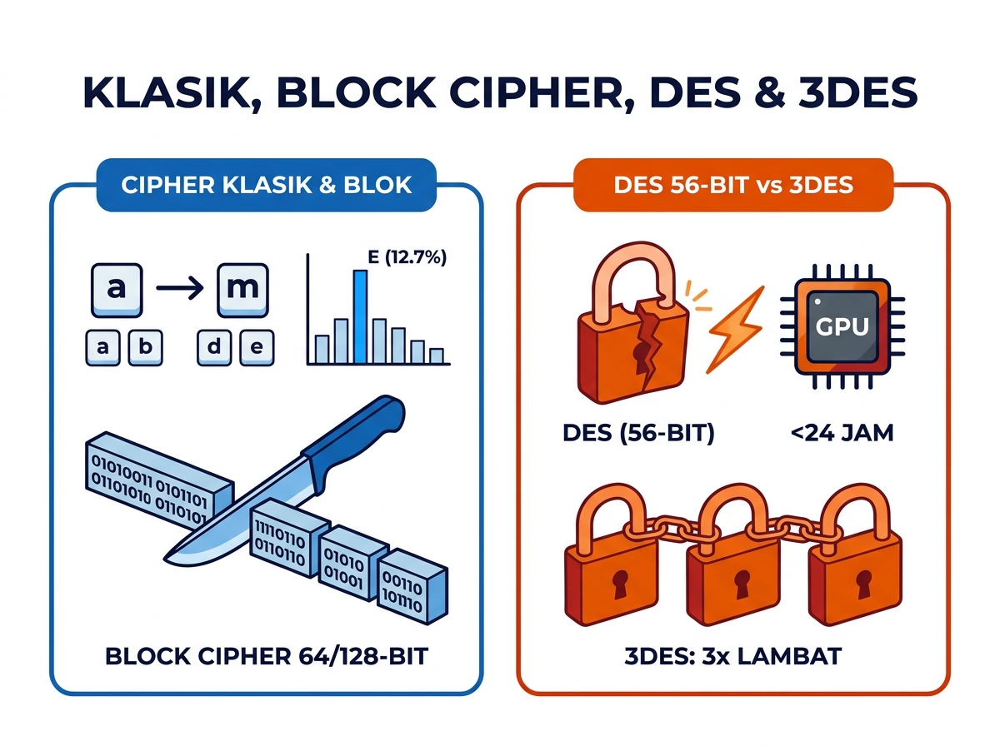
Substitusi monoalfabetik menyisakan pola frekuensi bahasa (huruf E ~12,7%); block cipher mengacak per blok bit tetap.
DES 56-bit kini rentan dipecahkan brute-force dalam hitungan menit/jam; 3DES mengulang prosesnya 3 kali.
Diresmikan NIST tahun 2001 (algoritma Rijndael) untuk menggantikan DES & 3DES secara global:
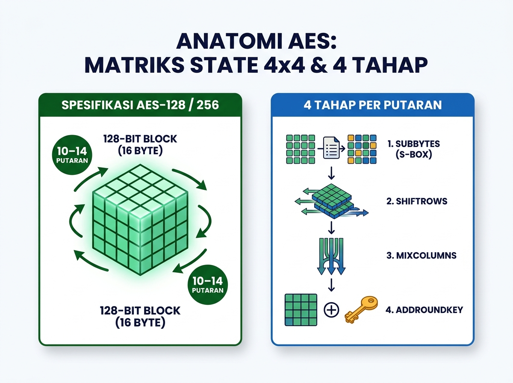
AES memproses blok tetap 128-bit (State 4x4 byte) selama 10, 12, atau 14 putaran sesuai panjang kunci.
Setiap putaran mengacak matriks State $4\times 4$ guna mencapai sifat Confusion & Diffusion:
Keempat langkah per putaran menyebarluaskan perubahan 1 bit ke seluruh blok (Confusion & Diffusion).
Mengapa Butuh Mode Operasi?
AES hanya memproses blok tepat 16 byte (128-bit). Untuk pesan panjang (file/web), cara menyambung blok menentukan keamanannya:
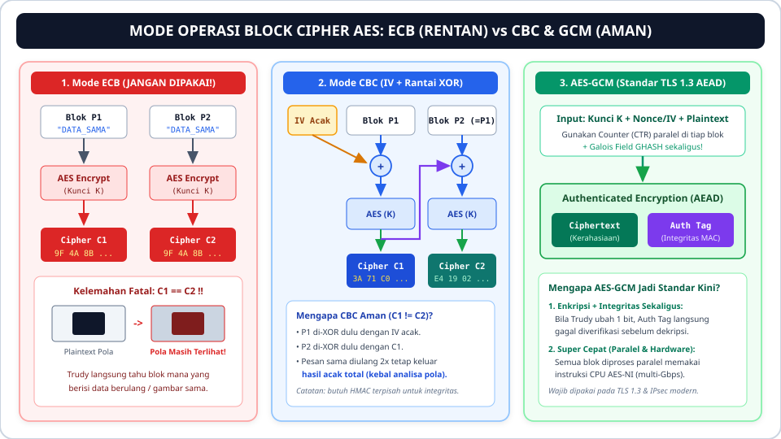
Komparasi Mode Block Cipher: Kebocoran Pola ECB vs Rantai XOR CBC vs AEAD AES-GCM
HTTP/1.1 200 OK atau From:.
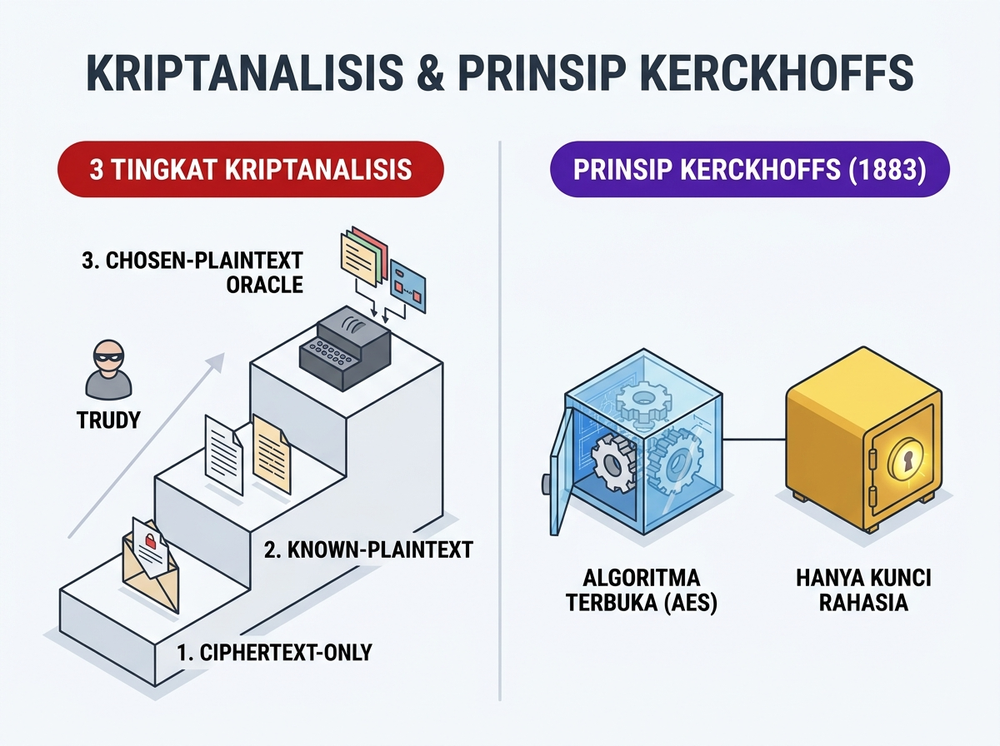
Kriptanalisis dinilai dari seberapa kaya sampel pesan yang bisa diperoleh atau disuntikkan Trudy ke sistem.
"Sistem kriptografi harus tetap aman sekalipun seluruh rincian cara kerja algoritmanya dibuka ke publik, selama kuncinya tetap rahasia."
Keamanan modern bertumpu pada kerahasiaan kunci, bukan menyembunyikan cara kerja algoritma (Audit Publik).
Dipelopori Diffie-Hellman (1976) & Rivest-Shamir-Adleman (RSA, 1978), pasangan $(K_B^+, K_B^-)$ wajib memenuhi dua syarat:
Ingat Operasi Modulo ($\bmod\ n$): artinya sisa
pembagian.
Contoh: $17 \bmod 5 = 2$ (karena $17 = 3\times 5 + \mathbf{2}$).
Syarat kunci privat $d$: $(e \cdot d) \bmod z = 1$. Pakai rumus cepat: $$d = \frac{1 + k \cdot z}{e}, \quad \text{coba } k = 1, 2, 3, \dots$$
Alice ingin mengirim huruf ke-12 ('l' $\to m = \mathbf{12}$).
Syarat wajib: angka pesan $m$ harus $< n$ ($12 < 35$).
Aturan Emas Modulo: Ambil sisa $\bmod\ 35$ setiap kali mengali! Pecah $12^5 = 12^4 \cdot 12^1$:
Mengapa $17^{29}$ Bikin Kalkulator Error?
Nilai aslinya $17^{29} \approx 4{,}8 \times 10^{35}$ (36 digit)! Mustahil dihitung langsung di papan tulis.
Trik 2 Langkah (Biner + Kuadrat Berulang):
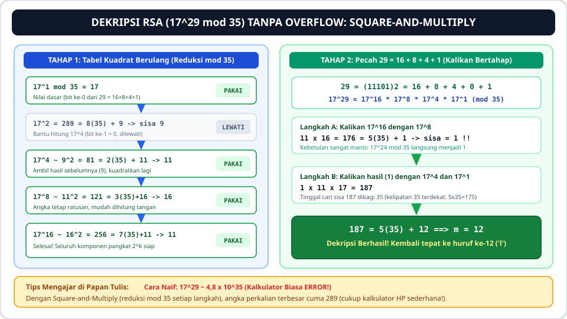
Metode Square-and-Multiply untuk Menghitung 17^29 mod 35 Secara Manual Tanpa Overflow
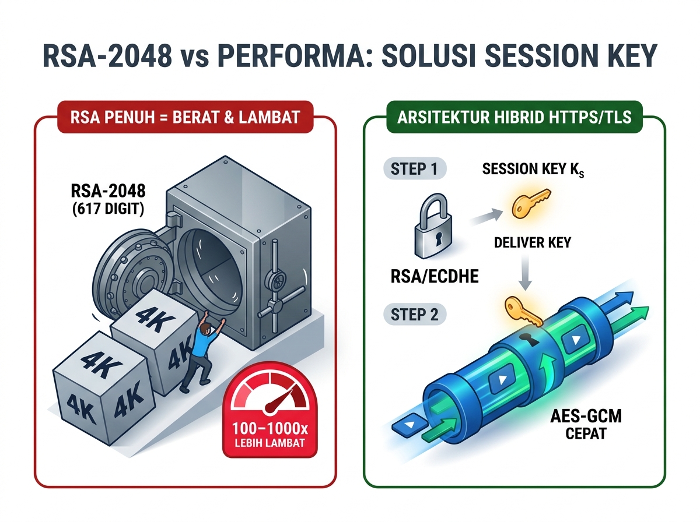
RSA-2048 melindungi faktorisasi prima lewat angka 617 digit, tetapi terlalu berat untuk mengenkripsi aliran data besar.
Meski ada trik Square-and-Multiply, memangkatkan bilangan 617 digit ratusan putaran tetap 100–1000× lebih lambat dari operasi geser/XOR pada AES.
HTTPS menggabungkan ketangguhan asimetris (pertukaran Session Key Ks) dan kecepatan tinggi AES-GCM.
Protokol Otentikasi ap1.0–ap4.0, Serangan Playback & MITM, SHA-256, Tanda Tangan Digital, dan Sertifikat CA
"I am Alice". Bob percaya begitu saja.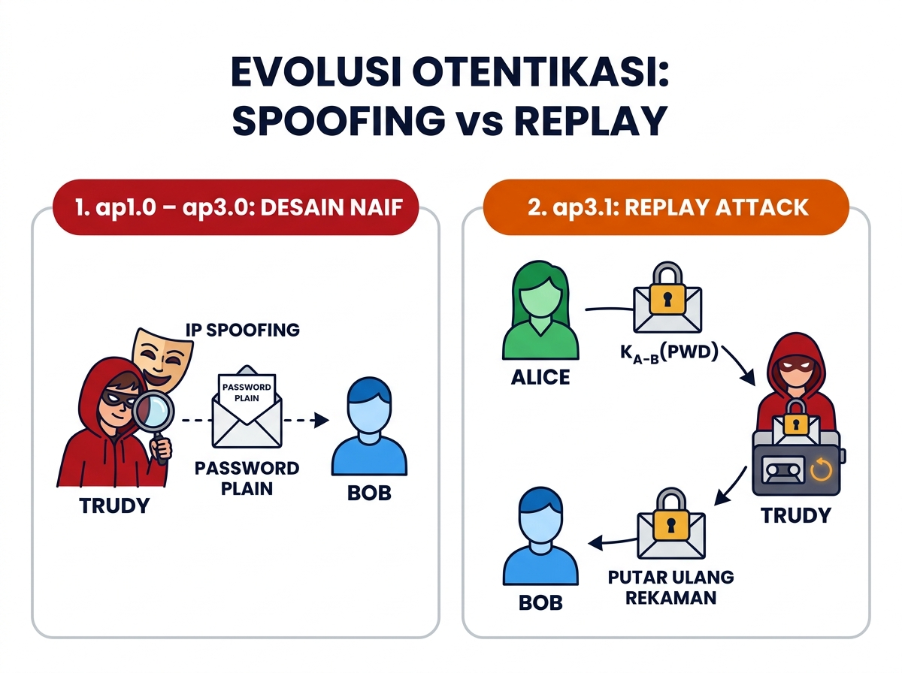
Klaim polos, alamat IP L3, maupun password plaintext dengan mudah dipalsukan atau disadap Trudy di jaringan.
Pada ap3.1, Alice mengenkripsi password memakai kunci rahasia bersama $K_{A-B}$:
"I am Alice", $K_{A-B}(\text{password})$
Meski sandi terenkripsi K_A-B(pwd), rekaman byte identik tetap dapat diputar ulang (Replay) tanpa membongkar kunci.
Agar membuktikan Alice sedang aktif (live), Bob menantang Alice dengan bilangan acak sekali pakai yang disebut Nonce ($R$):
"I am Alice"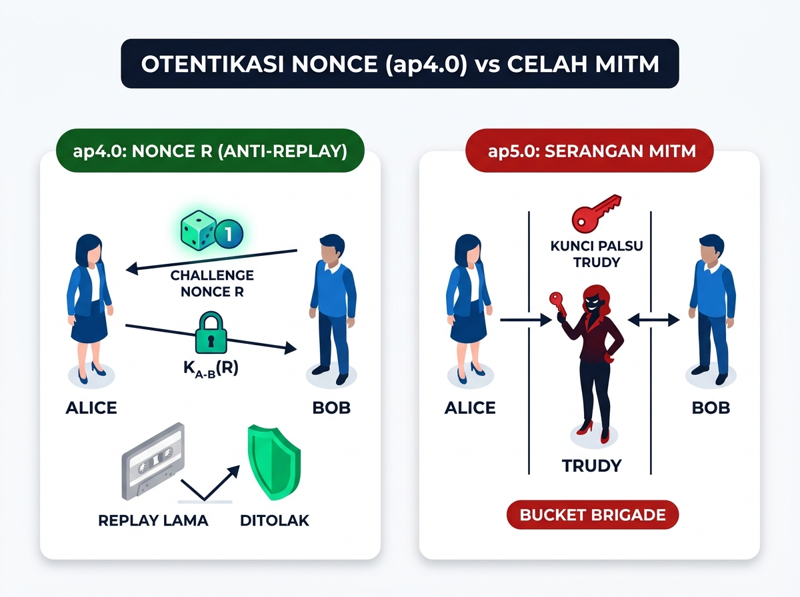
Bilangan acak sekali pakai (Nonce R) memastikan balasan terenkripsi hanya berlaku untuk sesi hidup saat ini.
Jika ap4.0 diubah menjadi versi kunci publik (ap5.0) tanpa verifikasi otoritas kunci publik, Trudy menyusup di tengah:
Tanpa sertifikasi otoritas kunci publik (CA), Trudy menyusup di tengah mengganti kunci Bob dengan miliknya.
1. Fungsi Hash Kriptografis ($h = H(m)$):
2. Digital Signature:
3. Certification Authority (CA X.509):
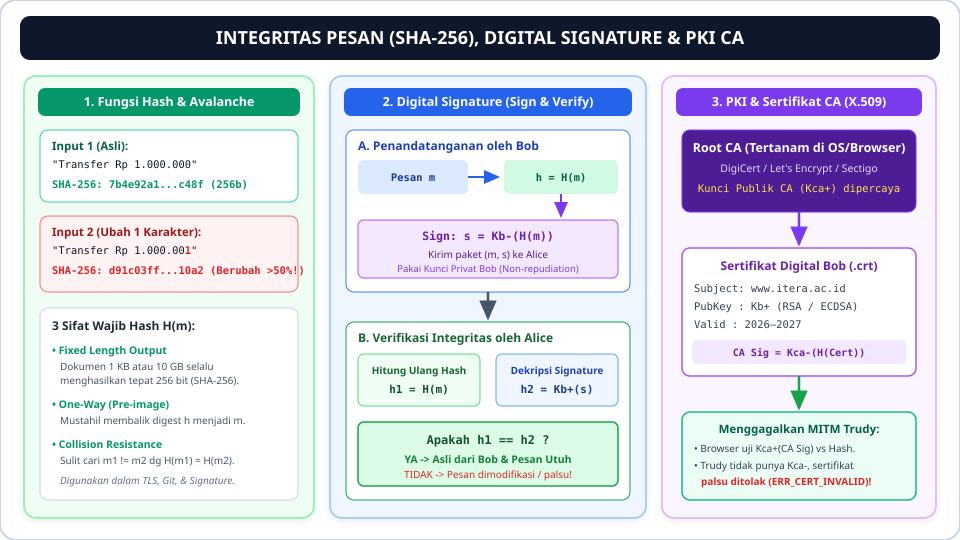
Pilar Integritas & Otoritas Trust: SHA-256, Digital Signature Sign/Verify, dan Rantai CA X.509
Mengamankan Lalu Lintas Transport/Web (HTTPS), Terowongan Layer-3 (VPN IPsec), dan Jaringan Nirkabel 802.11
Cakupan Proteksi Berdasarkan Lapisan:
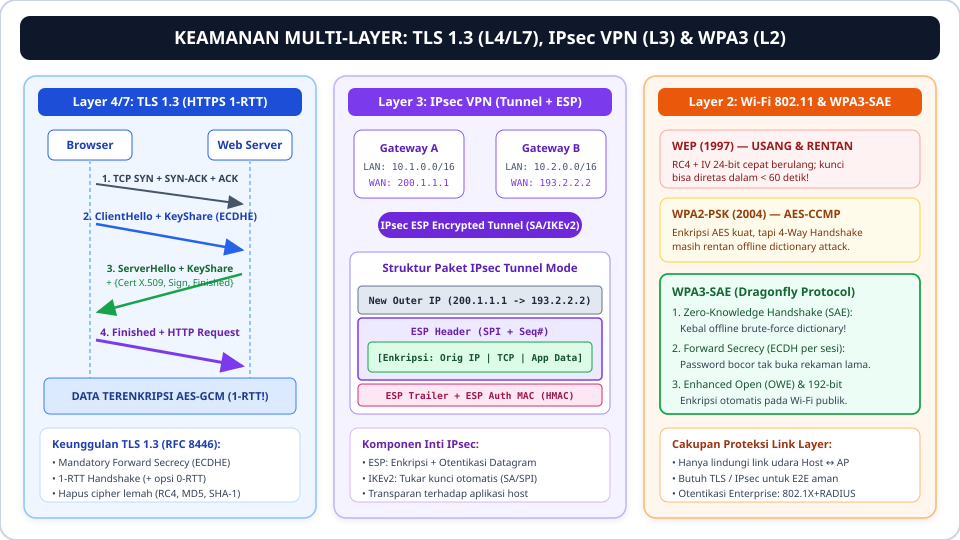
Komparasi Alur Kerja Keamanan di Layer Transport (TLS 1.3), Network (IPsec), & Link (WPA3)
ClientHello. Server membalas ServerHello, parameter ECDHE, sertifikat terenkripsi, & Finished dalam 1 RTT saja!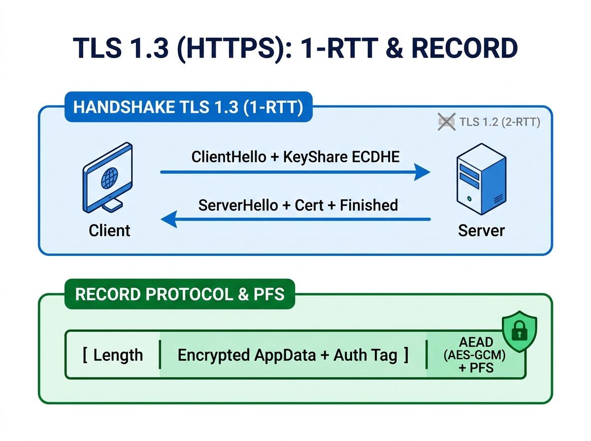
TLS 1.3 memangkas negosiasi dari 2-RTT menjadi 1-RTT dengan menyertakan KeyShare ECDHE langsung di ClientHello.
Setelah handshake, kedua pihak menurunkan kunci simetris independen (terpisah arah kirim vs terima):
AES-128/256-GCM atau ChaCha20-Poly1305.[Length | Ciphertext(AppData + Auth Tag)].Setiap record dilindungi AEAD (AES-GCM / ChaCha20) dengan kunci sesi sementara ECDHE yang langsung dihapus.
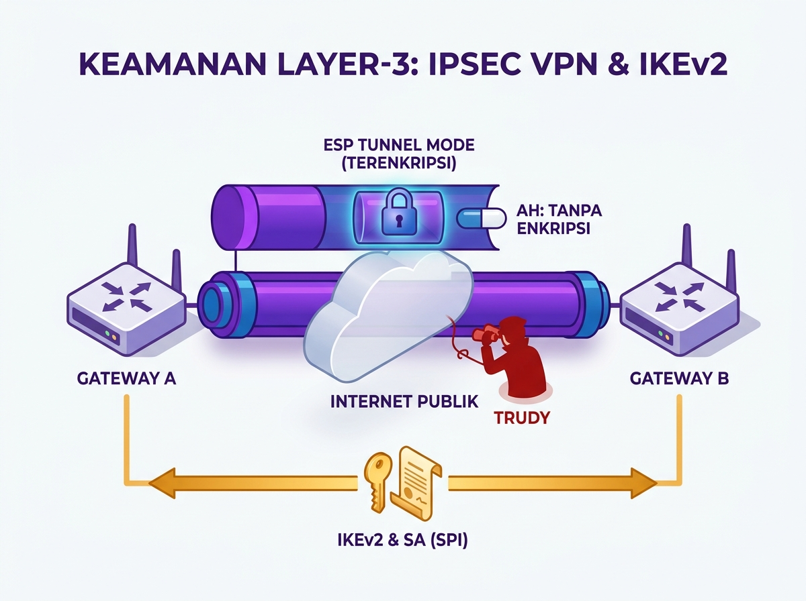
ESP Tunnel Mode membungkus dan mengenkripsi seluruh datagram IP asal antar gateway melintasi Internet publik.
Sebelum mengirim data terenkripsi, dua gateway membentuk kontrak logis satu arah yang disebut Security Association (SA):
UDP 500/4500 menggunakan Diffie-Hellman & Sertifikat/PSK untuk menegosiasikan kunci SA secara otomatis.IKEv2 menegosiasikan kunci dan kontrak satu arah SA (SPI) antar gateway secara otomatis pada UDP 500/4500.
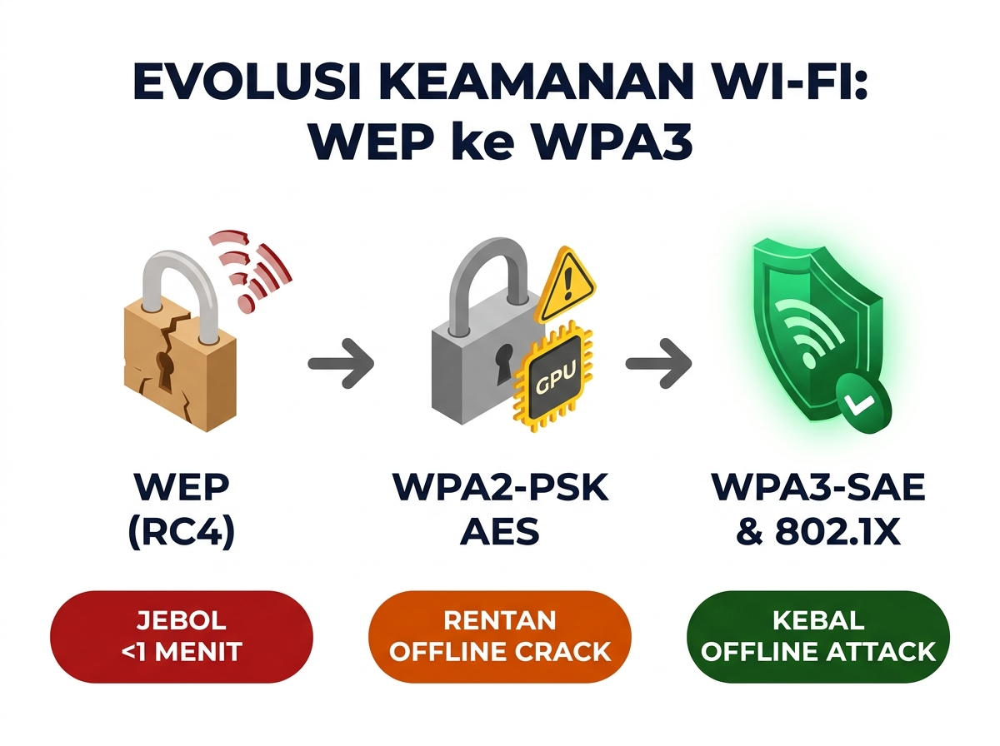
WEP langsung bobol karena IV 24-bit berulang; WPA2-PSK aman payload-nya tetapi handshake-nya bisa di-crack offline.
WPA3-SAE (Dragonfly) mencegah offline dictionary attack dan menjamin Forward Secrecy di jaringan udara.
Serangan DoS SYN Flooding & Mitigasi Preventif, Stateless/Stateful Firewall, IDS/IPS, DMZ, dan Simulasi
Mekanisme Serangan TCP SYN Flooding (DoS):
SYN memakai IP sumber palsu
(spoofed) tanpa pernah membalas ACK tahap ke-3.Mekanisme Preventif & Mitigasi Utama:
ISN pada SYN-ACK diturunkan dari hash kriptografis
(Src, Dst, Port, Secret). Memori hanya dialokasi bila ACK
valid kembali.
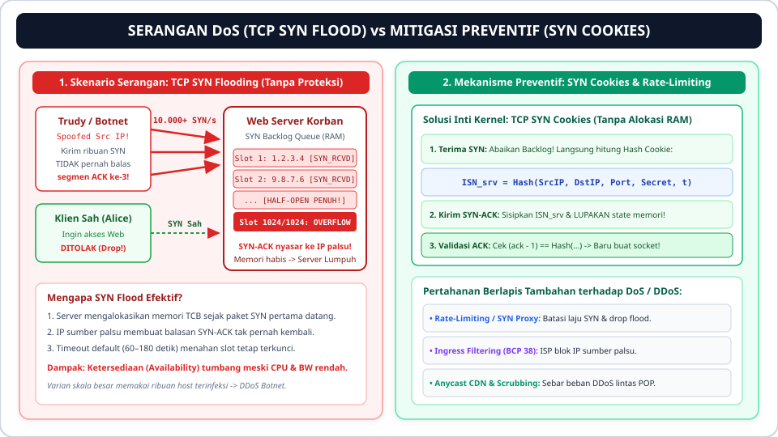
Anatomi Banjir Half-Open (SYN Flood) & Pertahanan Preventif Kernel via SYN Cookies
SYN_RCVD, ESTABLISHED); menolak paket balasan palsu yang
tidak diawali koneksi sah.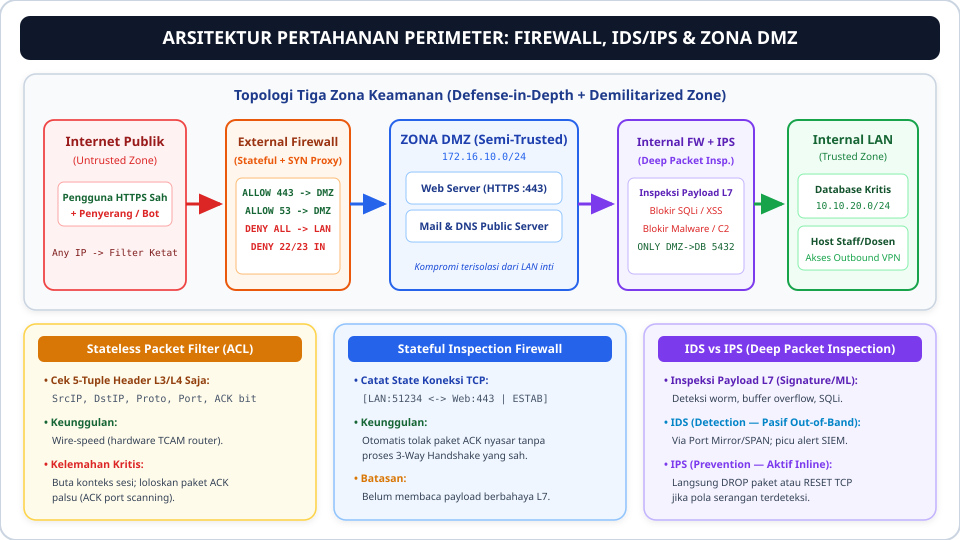
Arsitektur 3-Zona Perimeter (Internet – DMZ – LAN Internal) dengan Stateful Firewall & IPS
| Aksi | Arah | Src / Dst Port | Flag |
|---|---|---|---|
| ALLOW | In / Out | Any → :443 (HTTPS) |
All |
| ALLOW | Inbound | :443 → Ephemeral |
ACK=1 |
| DENY | Inbound | Any → :23 (Telnet) |
All |
| DENY | All | Default Implicit Deny | All |
ACK=1 ke sembarang port tanpa koneksi sah terlebih dahulu (ACK
Scanning) untuk lolos menembus router statis!
| Aspek | Stateful FW | IDS (Pasif) | IPS (Aktif) |
|---|---|---|---|
| Cakupan Cek | Header L3/L4 + State | Payload L7 (DPI) | Payload L7 (DPI) |
| Penempatan | Inline Gateway | Port Mirror / TAP | Inline Gateway |
| Respon Ancaman | Drop Paket Tak Valid | Kirim Alert ke SIEM | Drop / Reset Sesi |
| Risiko Utama | Overload State Table | False Positive | DoS False Block |
siakad.itera.ac.id memegang sertifikat X.509 valid
yang ditandatangani Root CA.0% terpakai).
Menunggu koneksi klien TCP...mod n agar angka
selalu kecil dan tidak pernah overflow di papan tulis.| Lapisan TCP/IP | Ancaman Spesifik | Protokol / Mekanisme | Pilar Keamanan Terjaga |
|---|---|---|---|
| Application / PKI | Pemalsuan identitas & ubah dokumen | Digital Signature ($H(m)$, RSA/ECDSA) & X.509 CA | Integrity, Authentication, Non-repudiation |
| Transport (L4/Web) | Penyadapan HTTP & pembajakan sesi | TLS 1.3 (1-RTT ECDHE + AES-GCM / AEAD) | Confidentiality, Integrity, Perfect Forward Secrecy |
| Network (L3) | Sniffing antar-gateway & IP spoofing | IPsec VPN (Tunnel Mode ESP + IKEv2 + BCP 38) | Confidentiality, Integrity, Network Authentication |
| Link / Wireless (L2) | Penyadapan udara & brute-force PSK | WPA3-SAE (Dragonfly), AES-CCMP, 802.1X+RADIUS | Confidentiality & Access Control Media Radio |
| Perimeter & Kernel | DoS SYN Flood, Port Scan, SQL Injection | SYN Cookies, Stateful Firewall, IPS (DPI), DMZ | Operational Availability & Isolasi Zona |
1. Inspeksi Plaintext vs Ciphertext (Wireshark):
Tangkap lalu lintas login situs HTTP (jika ada/simulasi lokal) vs HTTPS dengan filter
http & tls. Buktikan bahwa kredensial pada HTTP terlihat jelas
(plaintext), sedangkan pada TLS seluruh payload terenkripsi menjadi
ciphertext.
2. Analisis Handshake TLS 1.3: Lakukan filter
tls.handshake saat mengakses situs modern (misal itera.ac.id atau
google.com). Catat urutan pesan ClientHello, ServerHello,
versi TLS yang disepakati, serta algoritma Cipher Suite (misal
TLS_AES_256_GCM_SHA384).
3. Verifikasi Sertifikat Digital X.509 & CA: Buka ikon gembok/Site Information pada browser menuju 2 situs HTTPS tepercaya. Lampirkan tangkapan layar rantai sertifikat (Certificate Hierarchy): identitas Root CA, Intermediate CA, masa berlaku, serta algoritma tanda tangan digitalnya.
4. Uji Integritas & Efek Avalanche (SHA-256):
Buat file teks berisi NIM & Nama lengkap Anda, hitung nilai hash memakai terminal
(sha256sum / Get-FileHash). Ubah tepat 1 huruf/karakter saja lalu
hitung ulang—lampirkan bukti perubahan masif pada 256-bit digest.
5. Audit Port & Deteksi Firewall (Nmap):
Jalankan pemindaian port ringan terhadap host lokal/target uji legal (misal
nmap -sS -p 22,80,443 scanme.nmap.org). Analisis port mana yang berstatus
open, closed, atau filtered (terblokir oleh Firewall
Stateful/Stateless).
6. Penyusunan Laporan Praktikum: Susun seluruh screenshot bukti Wireshark, Sertifikat, Terminal SHA-256, dan output Nmap dalam satu laporan ringkas yang terstruktur beserta kesimpulan mekanisme Defense-in-Depth.
IF25-21008 Jaringan Komputer - Institut Teknologi Sumatera
Next Week: Wireless & Mobile Networks (Pertemuan 14)